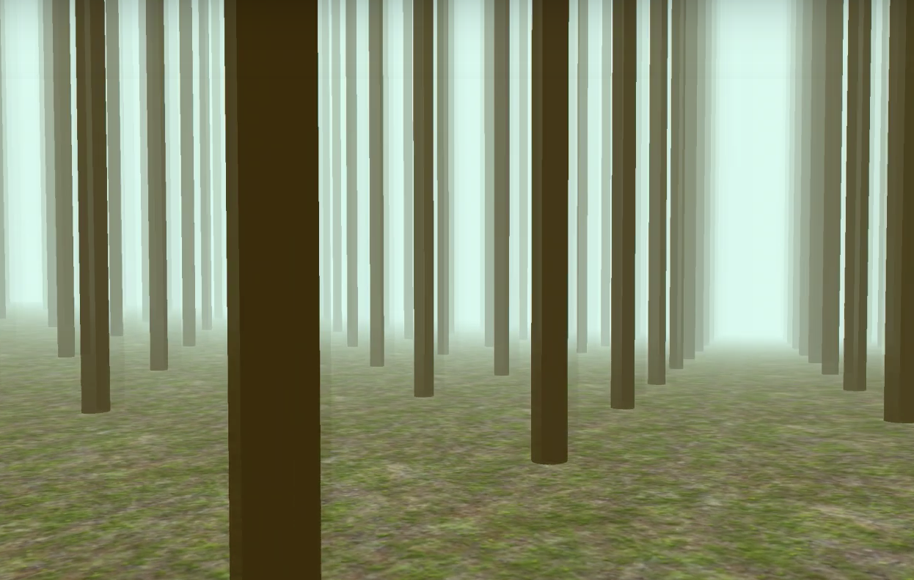

Assignment: Empathy Machine
This week assignment is to create a technical working prototype that allows a human to experience animal senses/locomotion or other animal processes.
Task:
I want to simulate the experience of a hungry cheetah that finds and catches the prey.
Focus on: Fast
Mission:
Step1:Bring users into the scenario
Scenario: the cheetah hadn't caught any preys for two days when it suddenly saw a gray duikers. If it dosen't run faster, it will continue to starve.
Let the users feel like:
1.He/she is a cheetah
2.He/she is hungry
Step2: let users experience cheetah's senses
In this case, I want to re-create the vision when the cheetah is finding and catching its prey.
1. Sight: surrounding is motion blur(fast), shake the lens
2. Sound: sound of wind, sound of running cheetah(fast)
Step3: Create interactions with the scenarios.
Users need to put efforts to catch the prey.
1. keep pressing the 'space' to increase the cheetah's velocity
2. move the mouse around to find the prey.
Design about Cheetah
Cheetah Habitat: According to the African Wildlife Foundation, cheetahs can be found in dry forests, grasslands, open plains and desert regions. so the environment I design based on dry forest

Cheetah's prey: Cheetahs enjoy their meat, and some of their common prey animals are smaller antelopes and wildebeests, guineafowl, gray duikers, impalas, kudus, gazelles, springboks, ostriches, jackals, hares and even birds. However, in my prototype, I use green cube to represent prey.
Prototype: click here to the website prototype
Future Iteration
1. Shake camera when run
2. Better motion blur when run
3. Make users hungry first.
4. Increase the animation framerate when press forward key.